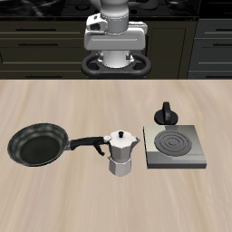
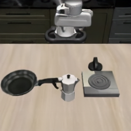
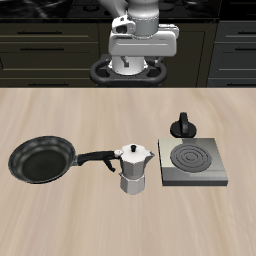
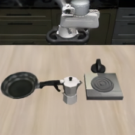
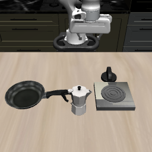

What normal rollouts show
One starting state, two different future–action pairs

and instruction

Action A


Action B

Future A agrees with Action A; Future B agrees with Action B—but agreement alone is only correlation.